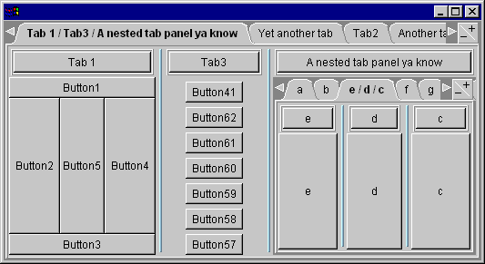

TabSplitter
Way Cool Tabbed Panel Component
Latest News
All changes are listed in the release notes.
2/28/98 - version 2.0.10 : This version enables the popup menu when executing under VisualAge for Java. The popup menu bug that was introduced in VisualAge for Java version 1.0 patchset2 has been corrected. This version of TabSplitter will work with VisualAge for Java in either of the following configurations:
- VisualAge for Java version 2.0 and later
- Note: Until I get a chance to rebuild it, you'll need to
open the following classes to the BeanInfo editor and choose
"Generate BeanInfo" from the "Features"
menu:
- TabPanel
- TabSplitter
- Note: Until I get a chance to rebuild it, you'll need to
open the following classes to the BeanInfo editor and choose
"Generate BeanInfo" from the "Features"
menu:
Overview
When developing ParseView, I needed a decent tabbed panel component. The one that came with Symantec Visual Cafe was ok, but I liked to tinker, so I wrote this one up.
It's evolved quite a bit over the past few months, and I came up with the cool idea of combining my SplitterLayout with it to make TabSplitter, tabbed component of the Gods! (No, really, my ego's more in check than it may seem...)
So what the hell does it do? It looks and acts like a nice tabbed panel, complete with OS/2-like +/- buttons and a pop-up menu for easy flipping through the contained components. The following screenshot illustrates what TabSplitter can do:

(Click here if you have a JDK 1.1-enabled browser to see a live demo! Some browsers won't display this correctly for some reason...)
But it's hiding the neat feature. If you drag a tab on top of another tab, they are merged together into one tab with a splitter bar separating them. Pressing the title button at the top of each sub-panel will separate that component back into the tab panel.
These components are free for any use you see fit (other than selling the components as a standalone product.)
Downloadable files
- tabsplitter.zip (120K). All source files, documentation and a jar containing all the class files.
The SplitterLayout can be used on its own too! It's a nice way to create panels with splitter bars. See SplitterLayout.
Note that the documentation is not yet complete. I did what I could before going insane adding doc comments. Next time I'll do more as I code. (That's what we all say, eh?)
Copyright © 1996-2009, Scott Stanchfield. All Rights Reserved.
Contact me at scott@javadude.com
JavaDude.com Home
Rounded-corner figures based on "More Snazzy Borders" by
Stu Nicholls
 Want
to hear about new stuff at JavaDude.com? Use this RSS Feed!
Want
to hear about new stuff at JavaDude.com? Use this RSS Feed!